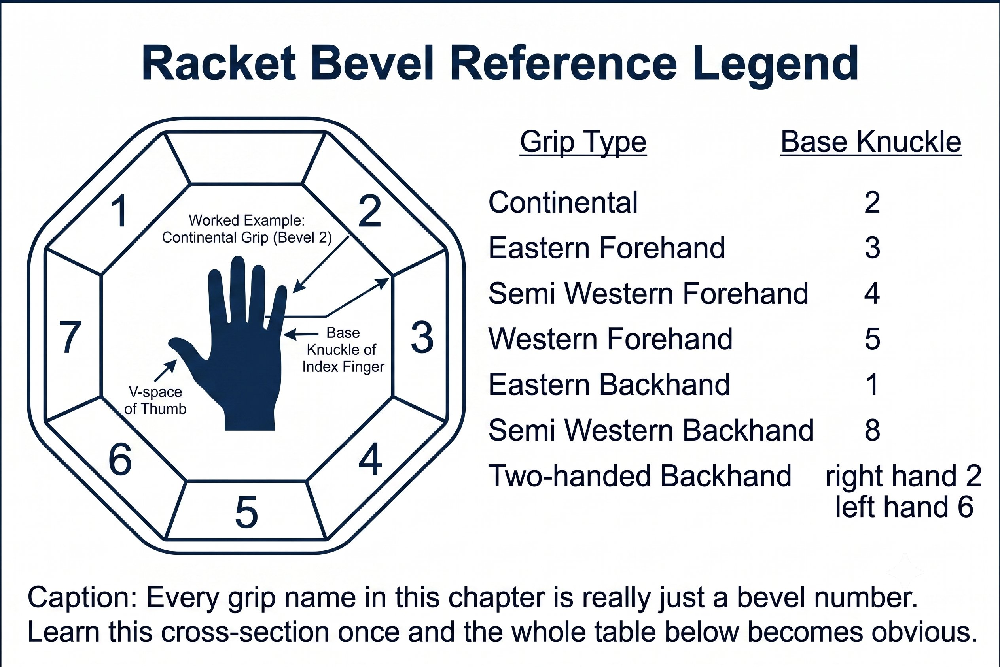

Chapter 2: The Tool
(English version of Chapter 2 in the United Tennis Handbook)
CHAPTER 2

Figure 1
THE TOOL
Grip Types and Their Baseline Face Angles
The grip sets your baseline face angle. Everything else — contact point, wrist, swing — only adjusts from there.
Grip doesn't create topspin or slice. Grip creates a natural face angle for a given wrist position.
— Henry Pham
The Fundamental: Grip Sets the Baseline Face
Figure 2.1: Every grip name in this chapter is really just a bevel number. Learn this cross-section once and the whole table below becomes obvious.

Figure 2
Figure 2.1: Every grip name in this chapter is really just a bevel number. Learn this cross-section once and the whole table below becomes obvious.

Figure 3
Your grip is nothing more than the starting position of the racket face relative to your hand. It doesn't “make” spin. It sets the neutral face angle your racket shows when your wrist is relaxed and in its natural position at your ideal contact point.
Here's the simplest way to think about it: hold the racket with a relaxed wrist at your perfect contact spot, and whatever face angle you see is your grip. Any angle other than that requires you to actively manipulate your wrist — and active wrist manipulation is exactly what kills the stretch-shortening cycle, your proprioception, and your Jin.
The Four Main Grip Families
Figure 2.2: Six grips, six different starting face angles — before the wrist or the swing does anything at all.

Figure 4
Each grip family presents a different natural face angle at a different natural contact point. The table below is your reference.
Figure 2.2: Six grips, six different starting face angles — before the wrist or the swing does anything at all.

Figure 5
The Principle
Grip doesn't create spin. It sets the natural face angle at your wrist's neutral position. Spin comes from swing path plus face angle at impact.
How Grip Shifts Your Contact Window
Figure 2.3: The more closed the grip, the further forward — and the less forgiving — your contact window becomes.
Because every grip presents a different natural face angle, your ideal contact point has to move to compensate.
Figure 2.3: The more closed the grip, the further forward — and the less forgiving — your contact window becomes.
Coach's Note
Watch a Semi-Western player hit a low ball late: the face is massively closed and the ball rockets into the net. Watch the same player hit the same ball further in front, and it’s perfect topspin. The grip never changed. The contact point did.
Why the Continental Is the Universal Tool
Figure 2.4: Same grip, same hand position, five different shots. The Continental doesn't change — the swing path and contact point around it do.
Figure 2.4: Same grip, same hand position, five different shots. The Continental doesn't change — the swing path and contact point around it do.
The Continental grip (bevel #2) presents a naturally vertical-to-slightly-open face at a contact point beside the body. That's what makes it the one grip that works for:
– Serve — contact is high and slightly in front, so the face naturally opens for pronation.
– Volley — contact is in front and to the side, so a vertical face gives you a stable block.
– Slice — contact is beside and lower, so an open face produces underspin without a wrist flip.
– Overhead — same geometry as the serve, so pronation works naturally.
– Drop shot — soft hands plus an open face give you underspin and touch.
What the Continental isn't built for is rally topspin. Its natural face is vertical, and its contact point sits too close to the body. To generate topspin with it, you'd have to make contact way out in front — which makes you slow and late.
Grip Plus Contact Equals Face Angle at Impact
This is the equation that runs the whole system:
Face angle at impact = grip baseline + contact point offset + wrist manipulation.
The goal is zero wrist manipulation. Let grip and contact point deliver the face you need.
GRIP SETS THE BASELINE. CONTACT POINT TUNES IT. THE WRIST STAYS OUT OF IT.
Matching Grip to Your Game
Choose your forehand grip so that your most common ball height, at your most common court position, arrives at your ideal contact point with a vertical-to-slightly-closed face.
Coach's Note
Don't copy pro grips. Copy the principle: choose a grip so your most common shot arrives at your contact point with a neutral wrist. If you're a 4.0 player hitting waist-high balls from the baseline, Eastern or Semi-Western is correct. Western will just make you late.
The Grip Pressure Rule
Figure 2.5: The spike is narrow on purpose. Grip pressure that ramps up gradually, or stays high too long, kills the exact fascial recoil this chapter — and the whole system — depends on.
Figure 2.5: The spike is narrow on purpose. Grip pressure that ramps up gradually, or stays high too long, kills the exact fascial recoil this chapter — and the whole system — depends on.
Regardless of grip type, pressure follows the same pattern through the swing:
– Takeback to drop: 3/10 — loose, fingers only.
– Forward swing: 3/10, held until 0.03 seconds before contact.
– At contact: 6–7/10 for about 30 milliseconds — firm, not a squeeze.
– Follow-through: back to 3/10 immediately.
Squeeze early in the takeback and you kill the stretch-shortening cycle before it starts. Stay loose at contact and the face goes unstable. The transition between the two is the actual skill.
3/10 → 6/10 at contact → 3/10. The tighter you grip early, the more fascial recoil you kill.
Key Takeaways
– Continental for serve, volley, slice, overhead, and drop shot.
– Eastern or Semi-Western for forehand rally topspin.
– Eastern or Semi-Western backhand for one- or two-handed drives.
– Grip pressure: loose at 3/10, firm to 6/10 at contact, back to 3/10.
– Match your grip so your most common ball height meets your ideal contact point with a neutral wrist.
Where This Leads
This chapter establishes the grip variable in the core equation. Chapter 3 shows how contact point precisely tunes the face angle that grip establishes. Together, they form the R — Racket — in the Q-V-F-P-T-J-R-CORE system.